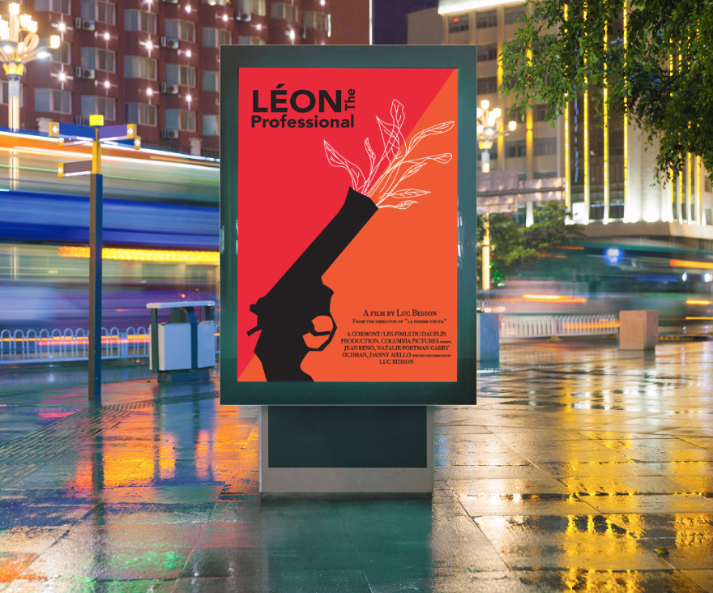
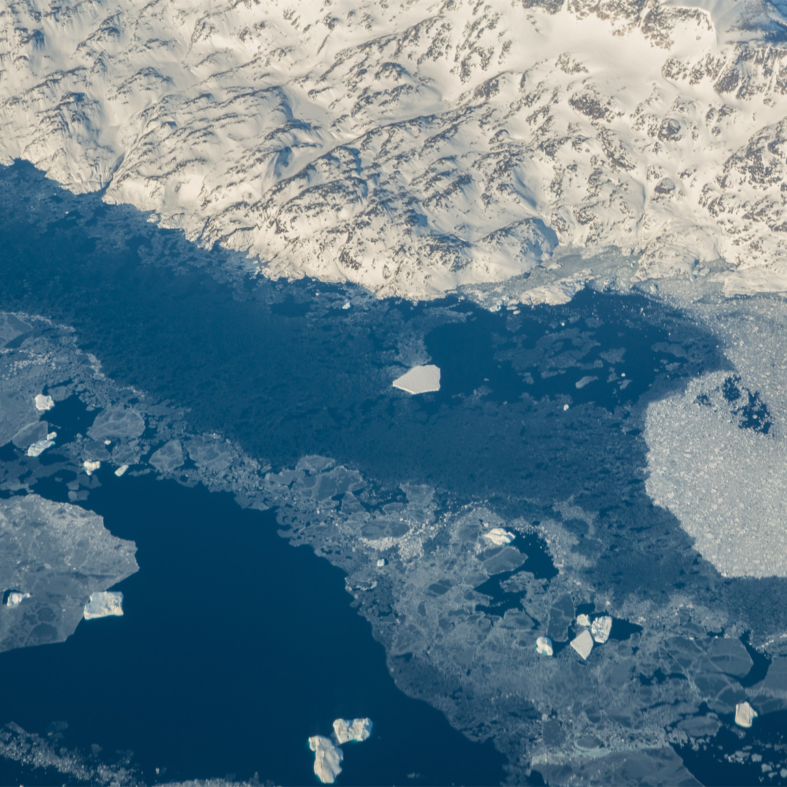
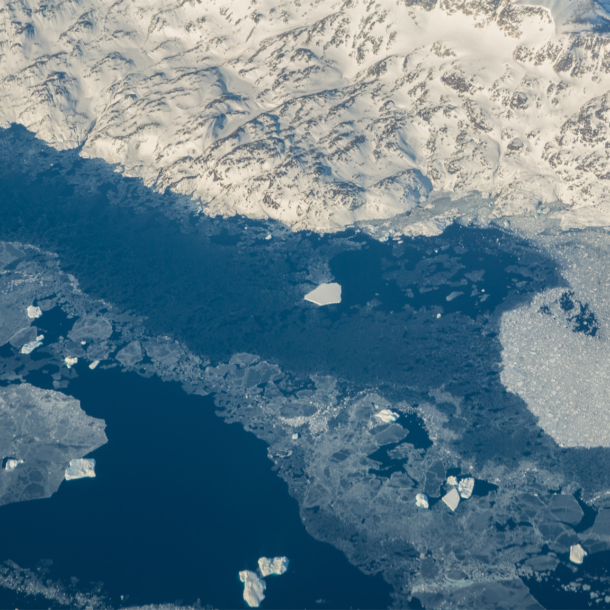

Gallery
Expressing my thougths with visuals always gave me a feeling of satisfaction as it looks more from this century. Most of my work is digital and all of the ones on this websites are the digital ones.
I was always interested in art, by time it turned into design which communicates the solutions for problems and creativity.
Design

Photography
I find my inspiration in the in photography and that helps in my design projects. I also find inspiration on internet.
My photography is from all around the world, from a tropical reptile's eye to volcanic geysir of Iceland.
Chris Burkard
Renan Ozturk
Peter McKinnon
Ansel Adams

 

Contact Information
dunyabulut@gmail.com
University of Miami 2020